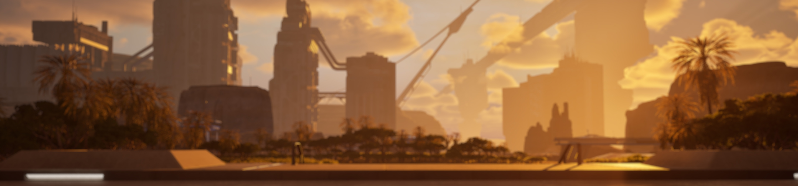

Product
Release notes and launch updates
Use this stream for what changed, what opened, and what visitors should try next.
Open roadmapUpdates
This newsroom template avoids the feeling of a cluttered archive by grouping content by purpose: release notes, economy signals, worldbuilding, and company context.

A newsroom should guide attention instead of making every update compete equally.
Editorial streams
Product
Use this stream for what changed, what opened, and what visitors should try next.
Open roadmapEconomy
Keep the signals high-value and recent so the page supports trust instead of noise.
See economy pageUniverse
Editorial storytelling should deepen the premium feel without blocking action.
See the universeContent policy
Only current, decision-relevant updates should get hero placement. Old campaigns, outdated launch states, and stale status claims should lose visual prominence quickly.
That keeps the newsroom from undermining the premium experience the rest of the site works to build.
Related destinations
Roadmap
A clearer status page for what is playable now, what is expanding next, and what remains long-term.
View roadmapSupport
Visitors should always know where to go when they need answers or issue resolution.
Get supportCommunity
Community conversation remains important, but the site now labels this clearly as a separate destination.
Join Discord